スティッフなモデルを使った可変ステップ ソルバーの調査
このデモでは、フーコーの振り子モデルの可変ステップ ソルバーの動作について調べます。Simulink® ソルバー ode45、ode15s、ode23、および ode23t がテスト ケースとして使用されます。スティッフな微分方程式が、この問題を解くために使用されます。方程式のスティッフ性の厳密な定義は存在しません。数値法を使用してスティッフな方程式を解く場合、一部の数値法は不安定なため、ステップサイズをかなり小さくしなければ、数値的に安定した解を得ることができません。スティッフな問題には、すぐに変化する要素と、ゆっくりと変化する要素が含まれていることがあります。
フーコーの振り子は、スティッフな問題の一例です。振り子が 2 ～ 3 秒で振動を終える (すぐに変化する要素) のに対し、地球が 1 回 自転するのには 1 日かかります (ゆっくりと変化する要素)。振り子の振動面は、地球の自転のため、ゆっくりと回転します。フーコーの振り子の物理的作用の詳細は、「フーコーの振り子のモデル化」デモを参照してください。
シミュレーションにより、地球上の観測者から見た x-y 平面における振り子の振り玉の位置が計算されます。次に、振り子のエネルギーの総量が計算され、さまざまな Simulink ソルバーの性能の評価に使用されます。
目次
フーコーの振り子モデル
フーコーの振り子は、以下に示す連立微分方程式系で説明されます。摩擦と空気抵抗は考慮されません (考慮しないことで方程式が大幅に単純化されます)。これらの方程式の全微分を、フーコーの振り子のデモで示します。
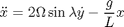
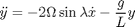
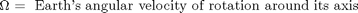
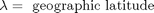
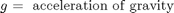
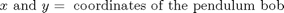
図 1 に示すモデルは、フーコーの振り子を説明する微分方程式を解くために使用されています。MATLAB® コマンド ウィンドウで sldemo_solvers と入力してこのモデルを開きます。フーコーの振り子が 86400 秒にわたってシミュレートされます。制約と初期条件は、モデル ワークスペースに保存されます。
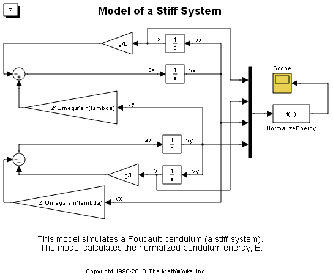図 1: フーコーの振り子モデルの使用によるソルバーの性能の評価
可変ステップ ソルバー
このデモでは、ode45、ode15s、ode23、および ode23t 可変ステップ ソルバーの性能を調べます。特定のソルバー、たとえば ode45 の詳細を参照するには、MATLAB コマンド ウィンドウで help ode45 と入力します。
表 1: Simulink で使用可能な可変ステップ ソルバーの一覧
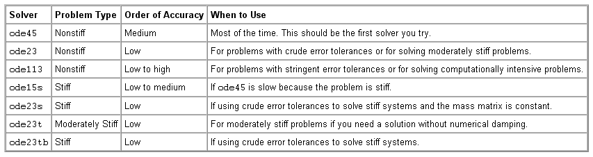
ソルバーの性能の評価
ソルバーの性能を評価するにはさまざまな方法があります。問題が閉じた形の解を持つ場合は、ソルバーの結果を、期待される理論上の結果と比較できます。特定のソルバーを使用して、モデルのシミュレーションの所要時間をモニターすることもできます。
残念ながら、フーコーの振り子には厳密な理論解がありません。閉じた形の近似解はありますが、ソルバーの性能の評価には使用できません (フーコーの振り子のデモを参照)。
エネルギーの総量の保存
このデモでは、エネルギー保存の法則を検証することによってソルバーの性能を評価します。摩擦のない環境では、振り子のエネルギーの総量は一定に保たれるはずです。しかし、振り子のエネルギーの計算値は一定ではありません。これは、数値の精度が限られているためです。
このデモでは、振り子の正規化エネルギーの総量が、タイム ステップごとに計算されます。エネルギーの相対誤差は、シミュレーション中のエネルギーの総量の変化に等しくなります。エネルギーは保存されるため、理想的には、エネルギーの相対誤差はゼロでなければなりません。エネルギーの総量は、位置エネルギーと運動エネルギーの和です。"NormalizeEnergy" ブロックでは、振り子の正規化エネルギーが以下の式で計算されます。
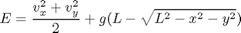

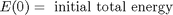
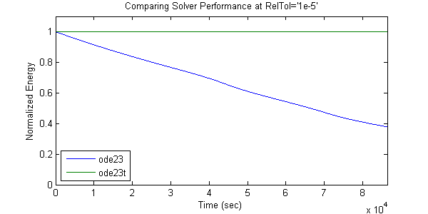図 3: 時間に対する正規化エネルギー
図 3 は、ode23 と ode23t を使用して計算された、時間に対する正規化エネルギーをプロットしたものです。この問題に関して ode23t が ode23 よりもはるかに正確であることは明らかです。ode23 を使用したシミュレーションでは、振り子の正規化エネルギーは 60% 以上減少しました。振り子の持つエネルギーが小さいと、振動も小さくなります。この影響は図 4 を見るとわかります。ode23 で計算された振り子の振幅は、振動面が回転すると小さくなっています。
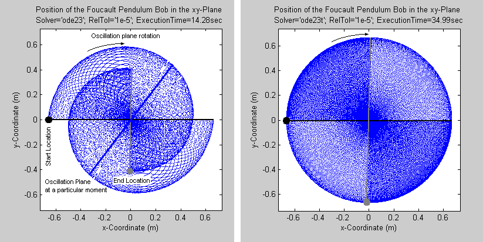
図 4: ode23 と ode23t を使用して計算された振り子の位置
図 4 は、スティッフ ソルバーとノンスティッフ ソルバーの違いを示しています。各プロットは、1 日のうちの振り子の振り玉の位置を示しています (データ点は 15 番目ごとに青色でプロットされています)。黒い点は振り子の振り玉の初期位置を示し、青い線は振り子の初期振動面を示します。グレーの点は振り子の振り玉の最終位置を示し、グレーの線は 1 日の終わりの振動面を示します。青い線は、中間時点における振動面を示します。振り子の振動面が 1 周するには、1 日では足りません。振動面の回転の速さは、地理緯度によって異なります (フーコーの振り子のデモを参照)。左のプロットでは振り子の振幅は小さくなっているのに対し、右のプロットでは振幅は一定です。相対許容誤差 RelTol=1e-5 が同じ場合、スティッフ ソルバーの方が結果の精度は高くなりますが、実行時間が長くなります。
図 5 では、Simulink ソルバーの性能をさらに詳しく調べています。4 つのソルバーを選び、相対許容誤差の関数としての相対誤差とシミュレーションの実行時間の変動を示しています。ソルバーをより広範囲にテストするなら、sldemo_solvers_mcode.m スクリプトを使用できます (このファイルを参照)。このスクリプトを使用すると、シミュレーションをスピードアップする C コードがモデルから生成されます。ただし、このスクリプトの実行には数分かかることがあります。

図 5: さまざまなソルバー設定での相対誤差と実行時間
この例では、相対許容誤差が 1e-6 未満の場合に相対誤差が減少していません。これは、特定のモデルに依存する数値ソルバーの限界です。ソルバーの相対誤差を小さくしたからといって、精度が上がるとは限りません。問題に必要な最低限の精度を推定し、シミュレーション コストが最小限に抑えられるようにソルバーを選択する必要があります。たとえば、フーコーの振り子の振り玉の位置を数センチの範囲内で知りたいとします。その場合は、振り子の位置を数ミクロンの範囲内で計算する必要はありません。そこまで正確に測定することはできないからです。
まとめ
シミュレーションの数値結果は、ソルバーの設定によって異なる場合があります。スティッフな問題の場合、これは非常に重要な意味を持ちます。スティッフなモデルを扱う場合は、最小コストで正確な結果を出すソルバーを選択してください。相対許容誤差 (可変ステップ ソルバー) またはステップ サイズ (固定ステップ ソルバー) は十分に小さくし、数値的に安定した結果が得られるようにする必要があります。ソルバーの中には特に効率的なものもありますが、スティッフな問題により適しているのはスティッフ ソルバーです。可変ステップ ソルバーは、固定ステップ ソルバーよりもロバストです。